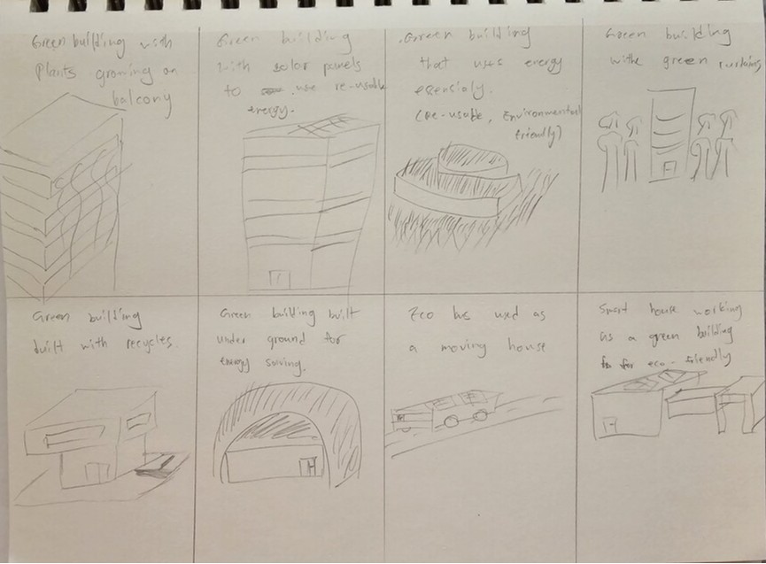
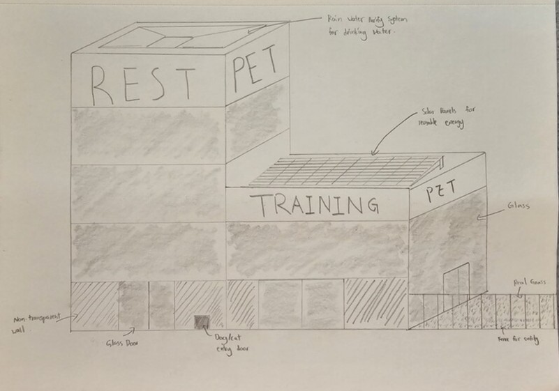
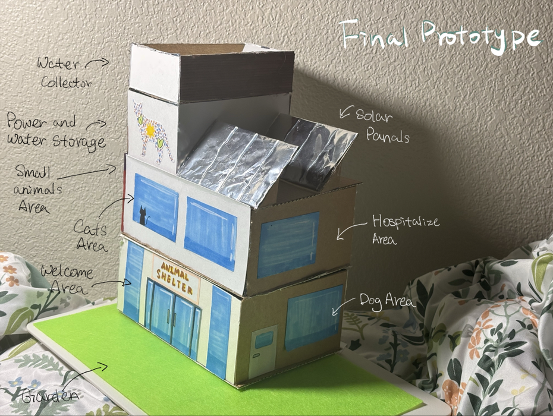
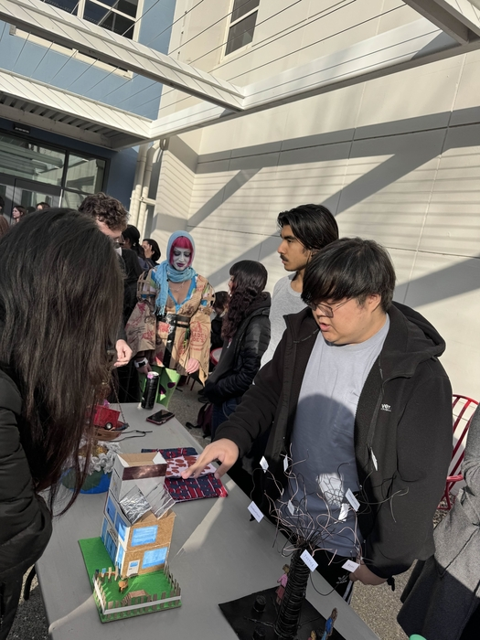

Crazy 8

This project focuses on designing a sustainable animal shelter built with reusable materials. The goal was to create a building that not only serves as a functional shelter but also reduces its environmental impact, addressing the urgent need for eco-friendly architecture. Thus I started idea sketch with crazy 8.
Rough Draft

This is the rough draft I sketched thinking how I should design my module.
Final Module

This was the final module built at the end of the quarter before the showcase.
Presenting

On the last day, I have showcased my module, presenting infront of people from other section of class and people who came to see the showcase.